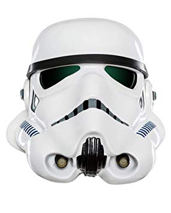

¡LOS JEDI GRISES!
Los jedi grises eran de los jedis mas inteligentes y sabios puesto que no obedecian a la orden jedi pero tampoco eran siths, estos jedis no veian la vida del blanco como los jedi pero tampoco la veian oscura como los siths. Los jedis grises trabajaban solos y solian usar sus propias ropas como un credo mas en la galaxia. Ellos podian usar el lado luminoso y sus beneficios al igual que podian usar la ferozidad y fuerza del lado oscura sin caer de lleno en uno de estos lados de la fuerza. Este termino de equidad entre lados de la fuerza se cree que es el correcto en la galaxia puesto que mientras siga existiendo el lado luminoso, el lado oscuro siempre lo atacara porque los seguidores de cada bando creen que asi lo dicta la fuerza, cuando la realidad es otra. Un ejemplo es cuando en la serie animada Star Wars: Rebels el jedi Kanan Jarrus fue ciego en busca de ayuda para una guerra contra los imperiales, el jedi termino encontrandose con un ser altamente sensitivo con la fuerza llamado Bendu quien decia estar en el balance entre el lado oscuro y luminoso de la fuerza, el jedi Kanan le llama cobarde por no querer ayudarlo en su batalla, a lo que Bendu contesta que el no tomara partido en ningun conflicto puesto que el esta en centro de la fuerza y despues de que Kanan hiciera enojar a Bendu, el crea una enorme tormenta de la fuerza que ataca a rebeldes e imperiales por igual.
Los jedi grises mas famosos:
Qui-Gon Jinn: este jedi no seguia al consejo jedi y usaba tecnicas del lado oscuro sin verse influido por este.
Anakin Skywalker: apesar de convertirse en un Lord Sith, el aprendio del lado luminoso y oscuro y nunca se unio por completo al lado oscuro porque mientras Darth Vader pudiera recordar a Padme, Anakin nunca moriria en verdad y por eso al final vemos como se redimio y convirtio en un fantasma de la fuerza.
Galen Marek o StarKiller: entrenado por Darth Vader y madurado en el lado oscuro este clon siempre tuvo dudas sobre el lado oscuro y apesar de matar algunos jedis al fin terminaria uniendose a ellos.
Ahsoka Tano: esta jedi tras un juicio donde fue inculpada, fue expulsada de la orden jedi, su maestro Anakin demuestra su inocencia pero ella se va abandonando la orden, despues de mucho tiempo volvemos a ver a Ahsoka con dos sables de luz blancos y nos dice que no es una jedi ni un sith mostrandonos que tambien encontro balance en la fuerza
Por ultimo mencionar a los gemelos eternos mostrados en Star Wars The Old Republic. Estos hermanos fueron entrenados por su inafectivo padre que conocia ambos lados de la fuerza pero dominado por el lado oscuro. Los Eternal Twins eran fieros jedis grises que matan sin piedad a jedis y siths por igual, llevando los sables de los caballeros jedi y lords sith a su padre como trofeo. Ironicamente el hermano que vestia de negro era calmado y callado, y en cambio el hermano que vestia de blanco estaba lleno de rabia y odio contra su padre, en un ataque de rabia el hermano blanco se lanza sobre su padre pero el hermano negro usa la fuerza para detenerlo y en un breve combate el hermano blanco asesina al negro, pero al darse cuenta de lo que habia hecho sus ojos de sith desaparecieron y arrepentido ve como se extiende la mano de su padre hacia el en señal de que ha demostrado ser el hijo mas poderoso y un jedi gris.
Esto ultimo lo comente porque a pesar de no ser tan conocidos como jedis grises, estos hermanos son EPICOS.